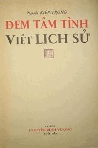

Lời Giới Thiệu

rước ba mươi tháng Tư 75, tôi tiếp xúc với Nguyễn Mạnh Côn nhiều hơn, thường xuyên hơn là với mọi văn hữu khác. Một thời, anh chủ biên tờ Chỉ Đạo, cơ quan ngôn luận của Người Việt Tự Do Chống Cộng. Tôi là bỉnh bút. Khi tờ báo này được giao cho Nha Chiến Tranh Tâm Lý (tiền thân của Cục Tâm Lý Chiến) thì anh là cộng sự viên. Hồi đó, tôi phụ tá cho chủ bút Kỳ Văn Nguyên, đặc trách biên tập.

Nguyễn Mạnh Côn là một văn sĩ có chân tài. Kiến thức phong phú. Bút pháp linh thông. Văn phong bình dị, trong sáng. Văn mạch sung mãn, bất tận. Văn thái chuyển biến linh hoạt theo từng tình huống. Khi cần thì viết như một nhà thông thái, hoặc như một nhà phân tâm học. Tuy vậy vẫn mang tính đại chúng, dễ hiểu. Nơi anh, có một đặc điểm nổi bật. Là hay khai dụng đề tài khoa học để lung khởi, đẩy đưa câu chuyện. Do đó, độc giả, dầu muốn dầu không cũng phải lưu tâm đến nội dung của chủ đề chính. Chẳng hạn như truyện Bán Linh Hồn Cho Quỷ được mở màn bằng mấy ẩn số toán học. Hơn nữa, anh hay viết về khoa học giả tưởng. Một cách sáng tạo, độc đáo.
Tác phẩm đầu tay của Nguyễn Mạnh Côn là Đem Tâm Tình Viết Lịch Sử (ký bút hiệu Nguyễn Kiên Trung). Có tiếng vang lớn. Nhưng phải đợi đến khi Kỳ Hoa Tử ra mắt thì danh tiếng anh mới thực sự được củng cố vững chắc. Kỳ Hoa Tử là một cô gái Nhật. Cô ta yêu một chàng trai Việt luân lạc bên Trung Hoa. Theo người yêu về nước. Lúc bấy giờ đang kháng Pháp. Trớ trêu thay! Nhắm đúng thời điểm đốt giai đoạn để thực hiện cách mạng vô sản. Mọi chướng ngại vật cản đường đều phải đốn ngã. Hồ Tùng Mậu là chướng ngại vật nguy hiểm nhất. Cộng đảng bèn dụng kế. Ngụy tạo ra tội phản động, buộc cho Hồ. Chàng trai nọ được lịnh đứng ra tố cáo trước tòa. Chàng vốn là một đảng viên trung kiên. Cho nên không thể kháng lịnh. Uyên ương xa lìa nhau. Mối tình thơ mộng và não nùng ấy tan vỡ. Trong thảm cảnh tóc tang, ngút ngàn sân hận.
Năm ấy, Nguyễn Mạnh Côn nắm tờ Chỉ Đạo. Anh thường ở nhà, ít khi đến tòa báo. Một hôm, Triều Đẩu có ý muốn gặp anh. Bảo tôi biết nhà thì đưa đi. Nhà văn trào phúng này mượn cớ là cậy đăng bài nghiên cứu về Đế Quốc Nga Sô Viết. Tiện thể làm mấy ngao. Hai vị đều là đệ tử của Nàng Tiên Nâu. Họ đi mây, về gió xả dàn. Quả là nói chuyện bên khay đèn thuốc phiện có khác! Không thể thiếu một thứ chuyện gì trên đời. Nổ như bắp rang. Tôi chỉ ngồi chầu dìa, lắng nghe họ trao đổi để học hỏi. Bữa ấy, Nguyễn Mạnh Côn hỏi Triều Đẩu:
- Đại ca viết biếm văn đến như thế là rất đạt. Trong cả hai cuốn Trên Vỉa Hè Hà Nội, Trên Vỉa Hè Sài Gòn, đàn anh đều không nêu đích danh một thằng nào. Không đấm vào mặt một thằng nào. Nhưng, có tật giật mình, cũng có đứa nó biết chớ. Nó biết chính nó là cái bia. Không phải là nó thì còn tên chó chết nào vào đấy nữa. Vậy đại cao không ngán cái vụ mua thù, chuốc oán ư?
Triều Đẩu:
- Tôi hãy hỏi lại anh trước đã. Anh dám chửi cả tập đoàn Cộng sản. Mà ở vùng đất tự do này, ngay cả ở Sài Gòn, chúng nó còn gài cả cán bộ nằm vùng. Vậy anh có ngán không?
Nguyễn Mạnh Côn lắc đầu mà cười tủm. Triều Đẩu tiếp lời:
- Anh dám chửi cả tông môn bọn lãnh tụ Cộng sản mà còn chẳng ngán. Huống chi tôi chỉ đả kích cá nhân, hà cớ gì mà phải ngán. Cứ cho rằng có đứa nó biết tỏng ra đi. Biết thì cũng chỉ ấm ức để bụng. Chớ ho hoe gì nổi. Thế anh có biết rằng anh bị bọn Cộng sản xếp vào loại phản động số một hay không?
Nguyễn Mạnh Côn:
- Xin các anh cứ thuật lại trung thực những gì đã biết. Tôi sẽ giải thích từng điểm một.
Triều Đẩu ra dấu cho tôi đỡ lời. Tôi nói:
- Nguồn tin do Sở Mật vụ Phủ Tổng thống cung cấp. Sở này đã mua gần hết ấn bản cuốn Tân Liêu Trai Chí Dị của Người Thăng Long. Một tác phẩm chống Cộng dưới hình thức liêu trai. Trong đó, những tên Cộng sản được miêu tả như hồ ly, yêu quái. Chính nhờ vào cái tác phẩm “nặng ký” ấy mà tác giả được Sở Mật vụ mời cộng tác. Anh ta cùng làm với tôi ở VP I thuộc Sở. Có lần tâm sự với tôi như vầy:
“Tôi viết văn vì lý tưởng đấu tranh chống Cộng. Chớ không phải là tôi cố ý viết một cuốn truyện chửi bới Cộng sản để dùng nó như một phương tiện tiến thân đâu. Thế nhưng bọn Cộng sản đã xuyên tạc. Chúng nó vu cáo cho tất cả những cây bút dám viết đụng đến chúng nó, chẳng hạn như Hiếu Chân, Trúc Sĩ, tất cả đều là tay sai của Đế Quốc, đều là ăn tiền của Mỹ mà viết nữa”.
Người Thăng Long phát biểu như thế đó. Theo sự phối kiểm tin tức của VP I thì Nguyễn Mạnh Côn đứng đầu sổ đen. Có nghĩa là chống Cộng tới độ quyết liệt, cực đoan. Chỉ có tiêu diệt cái chế độ sắt máu do Cộng sản dựng nên. Chớ không hòa giải, hòa hợp gì với cái tập đoàn cướp ngày ấy cả. Vậy anh nghĩ sao?
Nguyễn Mạnh Côn:
- Cái vụ Cộng sản dùng các toán ám sát để khủng bố người Quốc gia, đối với tôi, không có gì đáng nói. Vậy mà cứ phải nói. Tệ lắm cũng cả mấy chục lần rồi. Nói mãi hóa ra nhàm. Giờ, vì đại ca hỏi nên phải giải đáp thêm một lần nữa. Nhưng chỉ rút ngắn trong vài hàng thôi.
Cộng sản là mối tai ương cho dân tộc. Phải trừ khử mối tai ương đó. Bằng nhiều cách. Cách của tôi là dùng bút. Tôi viết là do chính tôi ý thức được, cần phải viết. Có nghĩa là viết theo tinh thần tự nguyện. Chớ có đế quốc nào thuê tôi viết đâu mà bảo rằng tôi ăn tiền. Còn việc Cộng sản xếp tôi vào loại phản động số một hay số mấy, điều đó không cần biết. Chỉ biết rằng chúng nó rất sợ những tác phẩm chống Cộng. Những tác phẩm mà sức công phá còn khủng khiếp hơn bom nguyên tử nữa. Thật sự là tôi không sợ Cộng sản tí nào. Tôi coi mấy trò hăm dạo của chúng nó như pha. Anh Triều Đẩu lo ngại giùm tôi có phần quá đáng đấy. Dầu sao, Côn cũng cảm ơn anh về thiện ý. Cần nói thêm. không phải là tôi không biết đến mọi thành phần nằm vùng. Bọn thích khách bị lực lượng an ninh thọp cổ không ít đâu. Tôi có đọc một xấp biên bản thẩm cung. Phối kiểm, thấy có nhiều điểm ăn khớp với nhau. Chứng tỏ bọn chúng được kết nạp bừa bãi. Cho nên đội ngũ rất tạp nham, hổ lốn. Hầu hết đều úy tử tham sinh. Giả như có ám sát được một người quốc gia, chúng cũng khó mà giữ nổi mạng sống. Miền Nam đâu phải là vườn hoang mà giặc Cộng hòng múa gậy.
...
Sau ngày Chỉ Đạo đình bản, Nguyễn Mạnh Côn và tôi ít khi gặp nhau. Thời gian trôi qua. Mãi đến mùa hè đỏ lửa 72 mới gặp lại anh. Anh vẫn sáng tác như ngày nào. Nhưng viết ít đi. Nghề cầm bút thực sự trở thành nghề tay trái. Mưu sinh là nghề tay phải. Anh làm tất cả mọi việc lương thiện có thể làm để kiếm tiền phụ với vợ. Kể cả dịch vụ chuyên chở hàng hóa. Với mọi dân làng bẹp như anh, bỏ ra nguyên một ngày để vật lộn với cuộc sống đâu phải là chuyện dễ. Được cái là, mỗi ngày, anh đã giảm dần phân lượng thuốc. Lúc đầu khó chịu lắm. Sau quen dần. Vì vậy mới dành được trọn buổi sáng để chạy ngoài. Anh nói mấy câu. Thoạt nghe, thấy không có gì đáng để tâm. Nhưng, sau ba mươi tháng Tư 75, mới thấy ứng nghiệm:
“Một con người đã mang thuốc sái như tôi mà nếu sa vào tay kẻ thù là dễ bị lung lạc. Dễ thay lòng đổi dạ khi kẻ thù dùng thuốc để nhử. Vì thế, tôi chỉ mong sao cai hẳn được là hết nợ. Chớ nặng nợ Phù Dung nó còn cực khổ gấp ngàn lần nặng nợ má đào đấy...”
Tôi có đưa cho Nguyễn Mạnh Côn đọc mấy truyện tâm đắc của tôi đã đăng báo để anh cho ý kiến. Đọc xong, anh nhận xét:
- Anh viết tiến bộ hơn hồi viết Chỉ Đạo nhiều. Không khô khan, nặng nề như trước. Mà tươi mát, nhẹ nhàng hơn nhiều. Cấu trúc vững. Hành văn mực thước, trang trọng. Tuy nhiên nên cẩn thận hơn nữa trong cách dụng từ ngữ. Chọn chữ sao cho đắt giá. Thế thôi.
Tôi hỏi Nguyễn Mạnh Côn:
- Khai thác mãi đề tài Cộng sản nó lanh quanh lẩn quẩn. Rất là nhàm. Chán phè. Anh có định chuyển sang đề tài khác hay không?
- Tôi không nghĩ như anh, nhà văn đáp. Viết mà khéo thì đề tài nào cũng hay hết. Nơi con người tôi, cái tư tưởng bất nhân nhượng đối với Cộng sản nó đã ngấm sâu vào tâm can rồi, không sao bỏ được. Vì vậy, tôi dự định dựng một tác phẩm lớn. Lớn hơn Mối Tình Mầu Hoa Đào nhiều. Căn bản vẫn là chống Cộng. Nhưng chống Cộng ở trình độ cao. Không cần mượn hình ảnh một tên giặc Cộng nào. Không viện dẫn, không phiếm luận dông dài về lời tuyên bố của một tên lãnh tụ đỏ nào.
Từ sau bữa hàn huyên lần chót ấy, Nguyễn Mạnh Côn và tôi không còn gặp lại nhau nữa. Vì hoàn cảnh không cho phép. Từ 72 đến 74, tôi bị cầm chân hăm bốn trên hăm bốn giờ ở Đài Quân Đội. Ba mươi tháng Tư 75, mất nước. Hai mươi tháng Năm liền đó, bị tống giam. Ở tù sáu năm. Khi được phóng thích mới hay tin nhà văn đã thành người thiên cổ. Anh đã kiệt lực vì đòn thù.
Hôm Nguyễn Mạnh Côn nhập trại Xuyên Mộc, một tên cán bộ văn hóa (!) nó mỉa mai hỏi anh:
- Mày là Đằng Vân Hầu, có tài cưỡi mây, sao không cưỡi mây trốn đi?
Anh không thèm trả lời. Anh im lặng. Sự im lặng hào hùng của con chó sói bị thương, sắp chết, được miêu tả trong bài thơ Le Cor (chiếc kèn săn) của thi hào Pháp Alfred de Vigny. Tên cán búa nọ nổi giận, nó gầm lên:
- Chạy hả? Mày có chạy đi đằng trời cũng không thoát khỏi tay chúng ông đâu.
Dứt câu, nó hất hàm cho tên quản giáo đứng gần đó. Tên này bèn gọi một thằng trừng giới vào, cho anh nếm đòn phủ đầu. Rồi anh bị tống vào kiên giam. Tại đây, cứ hai tù nhân một cặp đâu lưng vào nhau mà quỳ trên hai ô vuông gạch bông. Quỳ mà suy nghĩ. Quỳ xong là viết kiểm điểm. Viết xong lại quỳ. Rồi viết tiếp, khai cho bằng hết. Sau này, có một tên cán bộ văn hóa trung cấp ở Sài Gòn, chỉ vì “thiếu cảnh giác” hay vì “sơ hở sao đó” đã tiết lộ với báo chí nước ngoài khá nhiều về Nguyễn Mạnh Côn. Trước hết là nhà văn của chúng ta đã không đáp ứng đúng yêu cầu của cách mạng. Anh chỉ ôn lược những việc đã làm. Kể lại nội dung từng sáng tác. Chớ không tự lên án mọi hoạt động nói chung của mình. Có nghĩa là anh không nhận tội. Một tên quản giáo nó hỏi anh:
- Mày viết phản động đến như vậy mà còn cho là không có tội ư? Vậy mày có biết rằng cách mạng chỉ giam giữ mày một thời gian nào đó thôi, rồi tha cho mày về hay không? Chứ giữ mày ở lại làm cái gì cho tốn cơm, tốn gạo.
- Vậy các ông muốn tôi phải làm gì đây? - Nguyễn Mạnh Côn hỏi tên cán bộ nọ.
- Sẽ có người hướng dẫn cho mày. - Y nói xong là bỏ đi.
Hôm sau, có một tên làm dịch vụ đả thông. Nom lạ hoắc. Không biết gã ta hành nghề ngỗng gì ở ngoài đời. Gã cầm trên tay một bịch ni lông trong suốt. Cố ý giơ lên cho đối tượng nhìn thấy bên trong có những gói mỏng, nhỏ. Thì ra là thuốc phiện quết, cô lại. Như thể thuốc cao. Chỉ nuốt chửng, xài đỡ khi thiếu bàn đèn. Gã lải nhải bên tai nhà văn một chập lâu. Đại ý thuyết phục như vầy:
- Anh nên thành thật viết một bài kiểm điểm nhận mình có tội. Giờ, ăn năn hối hận, hứa với Đảng sẽ đổi mới tư tưởng, sẽ chuyển hướng sáng tác. Nếu anh chịu tuân hành nghiêm chỉnh pháp lịnh của nhà nước thì chắc chắn anh sẽ được trả tự do đúng thời hạn. Thuốc đây, hãy xài tạm, hầu phục hồi sự minh mẫn cho trí óc. Đừng khí khái hão mà chuốc họa vào thân, làm khổ cho vợ con. Ngộ biến tòng quyền là cách xử lý khôn ngoan của người biết tùy thời, lựa thế mà sống, anh ơi! Gầy còm, tong teo như anh, chịu đòn sao thấu...
Nguyễn Mạnh Côn thẳng thắn đáp:
- Ông cứ việc báo cáo lại với chúng nó về tất cả những điều tôi nói. Tôi không tôn thờ cái chủ nghĩa Cộng sản mà tôi đã di xuống chân ấy được. Tôi không bẻ cong ngòi bút, tôi không làm văn nô được. Đừng hòng dùng á phiện mà lung lạc tôi.
Việc gì phải đến đã đến. Nhà văn của chúng ta đã tự sát. Bằng cách nào, không nghe ai bộc tiết. Chỉ biết, trước ngày anh quyên sinh, anh gặp trưởng Trại mà hỏi y:
- Cách mạng công bố là chỉ giam tôi có thời hạn. Sao đã quá hạn mà không thả?
Tên cai ngục cười gằn mà bảo:
- Nói dễ nghe nhỉ? Mày ngoan cố quá, cứng đầu quá mà. Mày có chịu nhận tôi đâu mà đòi nhà nước tha cho mày.
Kẻ thù chưa kịp hạ thủ Nguyễn Mạnh Côn thì anh đã tự tìm cho mình cái chết rồi. Anh đã chết vinh. Anh đã bảo toàn được danh dự và tiết tháo của kẻ sĩ. Là một kẻ sĩ uy vũ bất năng khuất, anh đã không “lạc đường vào lịch sử” như một nhân vật trong truyện anh viết. Trái lại, anh đã đi thẳng vào lịch sử với tư cách một chiến sĩ tiền phong chống Cộng trên mặt trận quốc gia.
° ° ° ° °
Lòng hỏi lòng, tôi thấy mình như con ngựa mệt mỏi dọc theo lối mòn kháng chiến quanh co, nay ra đến con đường mới vừa thẳng vừa rộng, thốt nhiên đâm sợ. Sợ, nhưng cũng có mừng: Đàn ngựa trẻ đương phóng lên nước kiệu...
Tôi linh cảm Việt Cộng lại đương nhầm. Nhầm ở chỗ đánh giá anh em ta quá thấp.
MẸ,
MẸ SOI SÁNG ĐƯỜNG ĐI CHO CÁC CON CỦA MẸ.
Nguyễn Mạnh Côn
Vào cuối tháng chạp năm ngoái anh Nguyễn Đình Vượng đã in xong cuốn “ĐEM TÂM TÌNH VIẾT LỊCH SỬ” này của tôi. Tập san Chỉ Đạo có thịnh tình báo tin là sang đầu Giêng 1958 chúng tôi sẽ có sách bán. Kể từ bấy giờ, chúng tôi đã nhận được khá nhiều thư hỏi thăm. Nhưng cuốn sách vẫn chưa ra được, cho đến nay đã sang tháng Năm...
Cuốn sách không ra được vì thiếu hẳn một khuôn 16 trang đầu. Khuôn này không in được vì chúng tôi chưa có bài tựa.
Tôi vẫn đinh ninh xin một bạn văn viết cho mấy lời giới thiệu. Hoặc nữa - tôi nghĩ như vậy - tôi có thể tự mình bày tỏ những nguyên nhân vì đâu tôi tạo thành được cuốn sách. Từ năm đến bảy trang in chỉ là việc làm trong một đêm. Thế mà hơn một trăm đêm qua đi, chúng tôi vẫn chưa có bài tựa. Hay nói cho đúng, trong số bảy tám bài đã viết xong, chúng tôi không tìm được bài nào tương xứng với cuốn sách.
Thật xa xôi những kỳ thị chủ quan về giá trị văn chương hay tư tưởng của bài tựa: Tôi vẫn muốn được giới thiệu, hoặc tự giới thiệu, hoàn toàn về tình cảm. Nhưng tình cảm trong bản thân tôi, sau khi tôi viết xong cuốn sách, đã lắng xuống, như trời quang mậy tạnh sau một cơn giông tố. Ngày này qua ngày khác, tôi tìm hoài hủy không có được một rung động nhỏ. Tôi không sao viết nổi bài tựa. Tôi nghĩ mãi: Thì ra vấn đề không thu hẹp trong phạm vi văn nghệ hay kỹ thuật, vấn đề bao quát cả một niềm hy vọng tha thiết của quốc dân năm 1945, cả một cuộc phản bội của Mặt Trận Việt Minh, với không biết bao nhiêu người sống quằn quại, không biết bao nhiêu người chết thảm thê vì sự phản bội ấy. Tôi không viết được là phải. Tôi có lẽ nào đem chút tình cảm vụn vặt của mình làm mào đầu cho cả một giai đoạn lịch sử cao quý, hùng vĩ của dân tộc?
Nhưng vì đâu hôm nay tôi tự nhiên thấy bùng lên trong tâm hồn một ngọn lửa như ngày nào còn đương viết về những người bạn bị hạ sát trong cuộc Đấu Tranh Chính Trị của Việt Cộng. Tôi nóng nảy, muốn trút ngay lên mặt giấy một sự cần thiết phải gào thét, phải nức nở, cho số phận những người bạn tôi sắp phải chết, ngoài kia, bên trên vĩ tuyến Bắc 17 độ.
Nói là bạn nhưng chỉ có một số nhỏ là bạn tôi thật, còn nhiều người mới quen sơ qua trên con đường kháng chiến, nhiều người chưa hề được gặp mặt, nhiều người tôi đáng tôn lên bậc Thầy. Phan Khôi, Đào Duy Anh, Văn Cao, Trần Dần, Hoàng Cầm, Trương Tửu, Trần Đức Thảo, Nguyễn Mạnh Tường... Những người ấy sắp bị Việt Cộng đem ra xử án.
Tôi đủ hiểu Việt Cộng, để biết đích vì sao họ phải đem ra buộc tôi công khai những người đáng lẽ họ có thể thủ tiêu bí mật. Nhất định là trong hàng ngũ của họ có sự sứt mẻ trầm trọng. Một luồng dư luận mãnh liệt rõ rệt đương sôi sục lên giữa những người trí thức. Việt Cộng có thể giết bỏ vài chục nhân mạng bằng một chuyến máy bay định trước cho phát hỏa trên không trung, nhưng Việt Cộng cần phải dập tắt một luồng dư luận. Việt Cộng cần phải tổ chức cho kỳ được những phiên tòa công khai, trong đó từng người, từng người, trong số những người chủ trương chống lại chủ nghĩa Stalin-Mao-Hồ, phải công khai nhận tội, sau khi được giáo dục một lần cuối cùng bằng những phương pháp phát minh bởi đội M.V.D., đặc vụ chính trị. Năm 1936, Stalin đã dùng thử những phương pháp ấy vào những vị lãnh tụ của thời kỳ tiền khởi nghĩa 1917: tất cả mọi người đã nhận tội phản đảng, phản quốc, phản nhân dân.
Bây giờ đến lượt những nhà trí thức Việt Nam kháng chiến. Họ sẽ ra tòa, ngây độn, ngớ ngẩn vì những liều thật nặng của những thứ thuốc Pentholal, Morphine, Largactil, vì cả đêm đứng dưới hàng chục ngọn đèn 500 nến, không được nhắm mắt. Họ mệt mỏi cùng cực, với một phần đầu óc bị tê liệt bởi độc dược, họ sẽ nhận hết mọi tội, xin lỗi Đảng đủ điều, để chóng được nằm xuống nghỉ, dù là nghỉ chẳng bao giờ còn dậy. Họ sắp phải trả giá bằng tính mạng, những lỗi lầm của họ năm 1954.
Năm ấy, bằng sự tự ý ở lại miền bắc, họ đã chấp nhận những nguyên tắc thiết yếu của một chế độ độc tài. Họ đã nhìn chúng tôi - chúng ta - ra đi, hoặc thương tình hoặc rễu cợt. Tin tưởng vào lý luận, họ chờ đợi trông thấy giai cấp vô sản nắm quyền chuyên chế, nhờ có sức mạnh của đa số. Họ không phải là người đa số, họ biết từ lâu đa số sẽ quá khích và độc đoán. Nhưng họ không phút nào sợ hãi, viện cớ rằng họ chính là những người chỉ đường cho đa số - người ta, bọn lãnh tụ, vẫn nói như thế trong suốt thời kỳ kháng chiến.
Họ không chịu rằng họ chỉ là những phương tiện của bọn lãnh tụ, phương tiện dùng để khích động dân chúng reo hò băng mình vào lửa đạn. Phương tiện đã hết mọi tác dụng khi cuộc kháng chiến tạm thời dừng lại. Mà họ không chịu biết như thế, nên vẫn còn muốn soi sáng cho dân chúng đi lên con đường tự do hạnh phúc. Rất có thể họ muốn lãnh đạo cả chính trị, ảnh hưởng cả lãnh tụ, bởi nhân danh văn nghệ sĩ, họ gần gụi nhân dân hơn ai hết. Họ nghĩ mình là những phần tử thành tâm nhất của một chế độ cộng hòa nhân dân hay xã hội chủ nghĩa lý tưởng, nếu không phải là những người cộng sản thuần túy. Họ quên mình vốn dĩ là trí thức, trí thức tư sản.
Họ, nói cho thật đúng, có nhớ rằng từ khi chính phủ công khai lệ thuộc đảng, đảng đã có thái độ rõ rệt đối với những kẻ thù số một là giai cấp tiểu tư sản, lãnh đạo bởi tầng lớp trí thức, luôn luôn bảo vệ nhân phẩm, nhân đạo, tự do cá nhân, và tình thương yêu từ con người đến đất nước. Thái độ này nhằm xử trí trước tiên những phần tử tiểu tư sản đối kháng, chỉ giữ lại một số những kẻ nào chịu đầu hàng. Chính họ đã đầu hàng, nên cho chết tinh thần tự trọng để học tập chối bỏ cha ông và quá khứ. Họ tưởng thật làm như thế sẽ được đảng tha thứ cho cái tội đầu thai nhầm giai cấp.
Cho nên họ không ngờ phía sau những danh từ tốt đẹp của “Cuộc Cách Mạng Vô Sản Vĩ Đại của nhân dân ta” đã có sẵn một bản án của bọn lãnh tụ. Và tất cả những trọng tội bọn chúng đem buộc cho họ hôm nay: Phản đảng, phản cách mạng, gián điệp, tất cả chỉ để trừng trị họ dám theo đuổi một khẩu hiệu: Độc Lập - Tự Do - Hạnh Phúc, lợi dụng khẩu hiệu ấy để vận động nhân dân, tranh giành ảnh hưởng trong nhân dân với lãnh tụ.
Sự nhầm lỗi của họ sẽ phải trả giá bằng tính mạng. Nhưng trước khi chết, họ đã phải hối hận. Những truyện ngắn, những bức tranh, những bài thơ hay những bài tham luận họ sáng tạo ra trong ba năm gần đây, hết thảy đều chứng tỏ niềm thất vọng, cay đắng, xót xa của họ. Đến bây giờ, đọc những bài buộc tội họ, do bọn học trò của họ viết ra, tất họ đã hiểu Việt Cộng đã quyết định từ lâu rằng, sống tiểu tư sản, họ sẽ chết tiểu tư sản, không bao giờ không là tiểu tư sản!
Cái chết trông thấy của những người bạn có thể nào không gây ra trong tâm hồn tôi một sự xúc động cùng cực, mặc dầu họ có thể vẫn tự nghĩ là nghững người Cộng sản bị những người Cộng sản khác sát hại vì tranh nhau quyền lợi? Trong lúc này, tôi không sao nghĩ đến họ một cách chia rẽ.
Họ, như Trương Tửu, có thể vẫn ôm lấy danh nghĩa Cộng sản (anh theo chủ nghĩa Mác ngoài hai chục năm, chẳng có gì bảo đảm anh đã rời bỏ chủ nghĩa ấy từ 1954!) Họ, như Phan Khôi, Đào Duy Anh, Hoàng Cầm, chưa hề bao giờ là những người Cộng sản. Nhưng cùng nhau, họ đã chống lại Việt Cộng. Điều cần biết, đối với tôi, là trong hàng ngũ duy vật, một sự nứt nẻ trầm trọng đã được xác nhận.
Một điều cần biết nữa là thực tế đang chứng minh rằng những con người ấy, vốn dĩ cộng sản hay chỉ đầu hàng hoặc thỏa hiệp với Việt Cộng, cuộc tranh đấu của họ gần đây là cuộc tranh đấu tiểu tư sản. Dưới bất kỳ nhãn hiệu chính trị nào, do họ tự nhận lấy hoặc bị kẻ khác gán cho họ, họ quả thật là những người tiểu tư sản, trí thức tiểu tư sản.
Những người trí thức tiểu tư sản, trong hòa bình và vì lý tưởng, dám liều mình chống lại cường quyền và bạo lực, đó là câu kết cho cuốn ĐEM TÂM TÌNH VIẾT LỊCH SỬ, câu kết tôi muốn viết, mà trước kia không dám viết, e ngại rằng chưa đủ bằng chứng cho chúng ta tin cậy.
Thì bậy giờ, những nhà trí thức của thành Hà Nội, của Hồ Gươm và Hồ Tây không bao giờ phai nhòa trong tâm tưởng kẻ lưu vong, những nhà trí thức anh dũng ấy, bằng tai nạn của họ, đã cho phép chúng ta một lời quyết định.
NGUYỄN KIÊN TRUNG